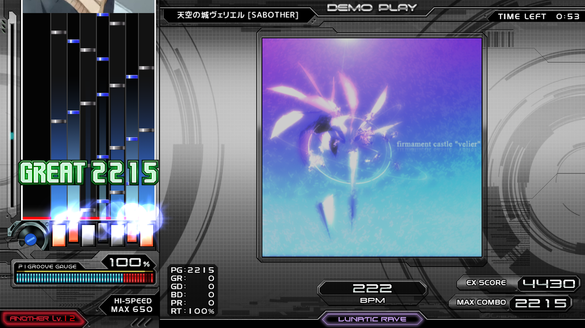

PC音楽ゲーム BMS
BMSの歴史
Bms of Fighters
BMS出身アーティスト
Links
BMSとは
BMS（Be-Music Source file）とは、
1998年、やねうらお氏とNBK氏によって考案された音楽製作、演奏が可能なファイルフォーマットである。
元々はKONAMIの音楽ゲームbeatmaniaを模したゲームである。
本稿ではBMSの文化や歴史、
現在の動向などを掘り下げていく。
